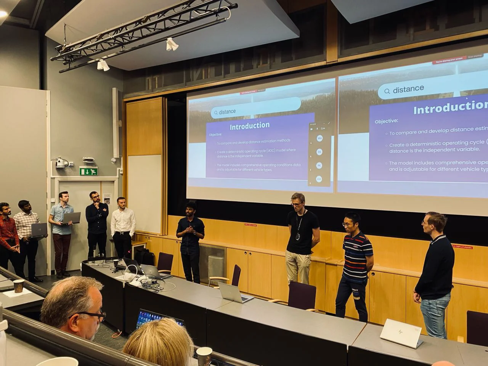

A backend that turns map data into drive-cycle files for truck energy simulation, and a comparison of 11 ways to measure a route, accuracy against speed.

Context
U-FEEL is a range-estimation project for Volvo's electric trucks and cars, run by Volvo Group with Scania, Chalmers, RISE and VTI.
A range simulation is only as good as its route. Straight-line GPS distance ignores slope, curvature and elevation, so a hilly route looks shorter and cheaper than it is.
My part was the road data: a backend that builds deterministic Operating Cycle (dOC) files the simulation can run on.
Requirements
| Need | Why |
|---|---|
| Accurate | On flat and on hilly routes |
| Fast | Simulations run many routes |
| Robust | Real GPS traces are noisy |
| Reusable | Output the simulation can load directly |
Architecture
Hover or tap any box for a plain-English explanation.
The trade-off
Three of the 11 methods, on the same routes. The test routes included the Stockholm Marathon, a Tour de France climb (Nice → Col de la Couillole), Lund–Malmö and Oslo–Bergen.
| Method | Error, flat | Error, hilly | Time per route |
|---|---|---|---|
| Vincenty variant (chosen) | 0.008% | 0.10% | ~0.03 s |
| Geodesic with elevation | – | 0.21% | 0.4 – 1.2 s |
| Haversine | ~0.31% | ~0.63% | ~0.005 s |
Outcome